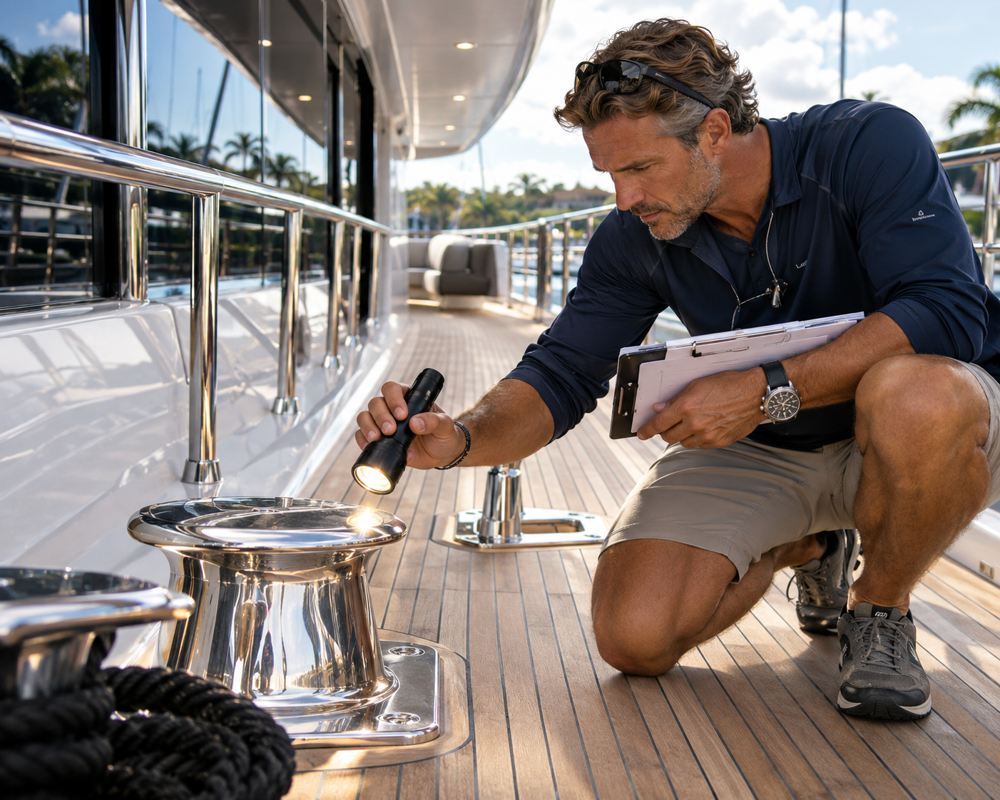
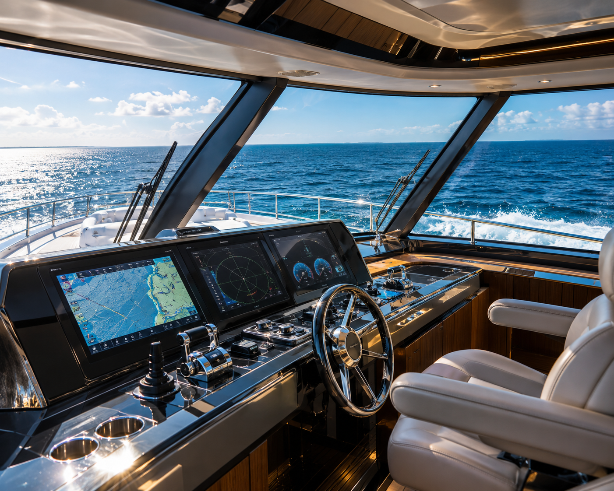
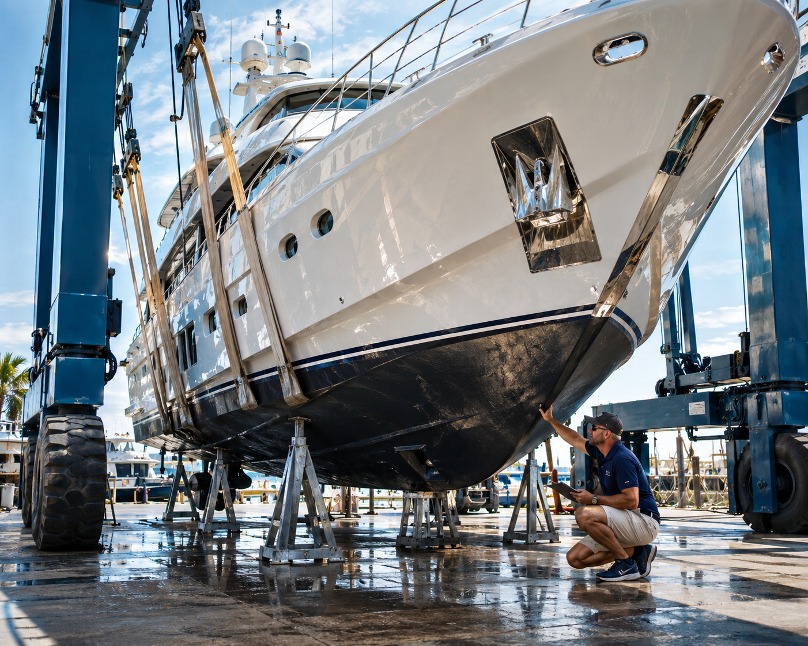
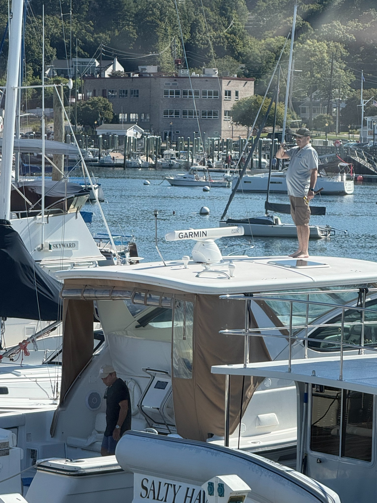

Pre-Purchase Surveys
Independent evaluations to support informed vessel purchases.
Iridium Marine Surveyors
Where Foresight Meets Safety.
Looking for Iridium Marine Surveyors? You’ve come to the right place. The experienced professionals of Iridium Marine Group provide comprehensive marine and yacht surveying services throughout South Florida and beyond.

From pre-purchase evaluations to condition and valuation surveys, our work helps owners, buyers, brokers, and captains make informed decisions with clarity and confidence.
Meet Iridium Marine GroupIndependent evaluations to support informed vessel purchases.
Clear assessments of vessel condition and estimated market value.
Condition and valuation inspections for insurance purposes.
Focused evaluations of reported damage, including lightning strikes.
Out-of-water inspections of hull surfaces and running gear.
Operational observations while a vessel is underway.
With more than 15 years of marine surveying experience, our team combines practical knowledge with clear, client-focused reporting.
Learn about our team ↗


Marine surveying expertise, from the dock to the open sea.
Discover our services, meet our team, and connect with Iridium Marine Group through our official website.
Visit Iridium Marine Group